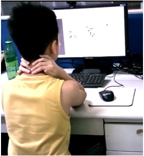

台灣五子棋協會 線上比賽注意事項
一、賽前準備
- 台灣五子棋協會（以下簡稱本會）目前辦理線上比賽之對弈平台為https://www.vint.ee/，網路視訊平台為Google Meet，聯繫平台為Line。
- 請參賽者於賽前先行完成前述三個平台之帳號註冊及操作環境熟悉。
- 本會將於報名截止後2個工作日內邀請參賽者加入Line比賽群組。Google Meet連結、比賽細部規則講解及注意事項均會公告於群組內。為維護各位參賽者權利並利主辦單位即時聯繫需要，參賽者須加入比賽群組。
- 參賽者須於賽前準備至少2個設備（對弈用及網路視訊用），並於賽前將視訊鏡頭架設完畢（主辦單會於比賽前會先行邀請測試），視訊鏡頭參考下圖：

- 參賽者上半身及對弈平台視窗須完整入鏡。
- 參賽者不得攜帶耳機或其他得進行通訊之裝置。
二、比賽期間
- 請參賽者於規定時間前至對弈平台比賽室及Goole Meet視訊房報到，以利主辦單位先行確認參賽者確實進入正確之比賽室。如未於第一輪開賽前進入比賽室，系統將自動取消參賽資格，請參賽者務必準時。
- 請參賽者於每輪比賽5分鐘前先行進入對弈平台比賽室等候系統開桌，如因遲到或未進入比賽室致被系統自動判負或取消資格，不得有議。
- 對局過程須維持視訊鏡頭之流暢，且參賽者不得離開螢幕畫面，請參賽者於賽前先行備好茶水及完成如廁。對局結束後至下一輪開賽前不限制視訊鏡頭開啟，惟須在下一輪開賽前開啟完畢。
- 參賽者須自行確保網路通暢，比賽期間如出現網路原因致落敗者，參賽者須自行承擔。
三、公平競賽原則
- 線上計分比賽視同正式比賽，參賽者必須憑靠自己能力完成比賽，不得採取任何對己方棋局有益手段（棋譜、軟體或AI等任何形式之輔助工具、他人指導棋局或對參賽者語言騷擾等）。
- 對局過程可進入其他參賽者的對局室觀看對局（同現實正式比賽），但不得做出打擾比賽或是用棋盤畫面復盤等違規行為。
- 主辦單位基於公平競賽原則，得以錄影、拍攝或擷取會議室畫面等方式，做為維護大賽秩序與違規查察之用。如發現違規情事， 主辦單位得視情節輕重判決該輪判負或直接取消參賽資格。
四、補充規定
- 線上比賽之各輪次捉對、開桌等事項均由系統自動完成，如比賽過程發生系統異常或爭議事件，請於Line比賽群組向主辦單位反應。
- 參賽者如未於比賽前一日23:59前加入Line比賽群組，主辦單位得取消其參賽資格並不予退費。
- 參賽者未於第一輪開賽前進入比賽室致系統自動取消參賽資格，經主辦單位裁定非屬個人原因而係系統異常之不可抗力因素者，主辦單位將予以退還報名費。